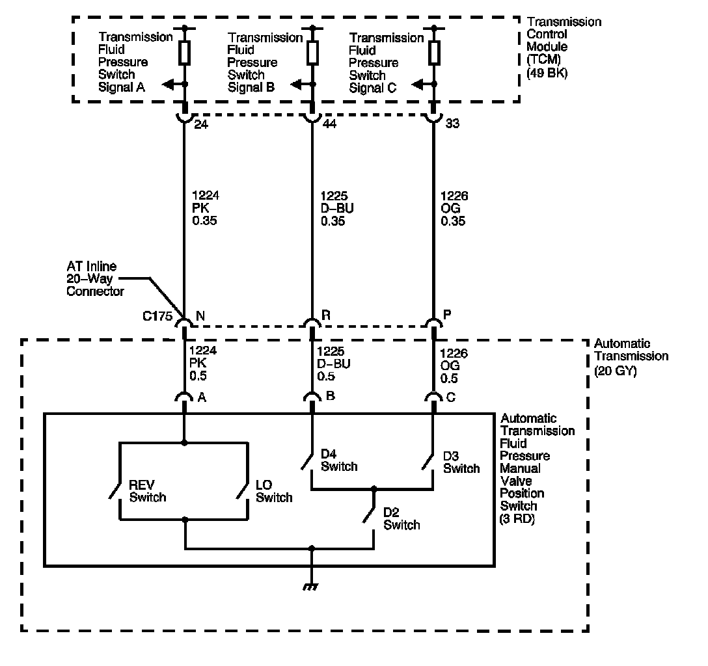

4L80-E / 4L85-E Automatic Transmission
DTC P1810

Circuit Description
The automatic transmission fluid pressure (TFP) manual valve position switch consists of five normally open pressure switches. The transmission control module (TCM) supplies battery voltage to each range signal. By grounding one or more of these circuits through various combinations of the pressure switches, the TCM detects what manual valve position has been selected, and compares the actual voltage combination of the switches to a TFP manual valve position switch combination table stored in memory.
The TFP manual valve position switch assembly cannot distinguish between PARK and NEUTRAL because the monitored valve body pressures are identical in both cases. With the ignition ON and the engine OFF, D2 is indicated. When the transmission 20-way connector is disconnected, the ground potential for the three range signals to the TCM is removed, and with the ignition ON, D2 is indicated.
If the TCM detects an invalid state of the TFP manual valve position switch circuit by deciphering the TFP manual valve position switch inputs, then DTC P1810 sets. DTC P1810 is a type B DTC.
DTC Descriptor
This diagnostic procedure supports the following DTC:
DTC P1810 Transmission Fluid Pressure (TFP) Position Switch Circuit
Conditions for Running the DTC
^ No PSA DTC P1810.
^ The system voltage is 8-18 volts.
^ The engine run time is 5 seconds or greater.
Conditions for Setting the DTC
The TCM detects an illegal TFP manual valve position switch state for 60 seconds.
Action Taken When the DTC Sets
^ The TCM requests the engine control module (ECM) to illuminate the malfunction indicator lamp (MIL) during the second consecutive trip in which the Conditions for Setting the DTC are met.
^ The TCM commands maximum line pressure.
^ The TCM assumes D4 for shifting.
^ The TCM freezes transmission adaptive functions.
^ The ECM records the operating conditions when the Conditions for Setting the DTC are met. The ECM stores this information as Freeze Frame and Failure Records.
^ The TCM stores the DTC P1810 in TCM history during the second consecutive trip in which the Conditions for Setting the DTC are met.
^ The TCM records the operating conditions when the Conditions for Setting the DTC are met. The TCM stores this information as Failure Records.
Conditions for Clearing the MIL/DTC
^ The ECM turns OFF the MIL during the third consecutive drive trip in which the TCM does not send a MIL illumination request.
^ A scan tool can clear the MIL/DTC.
^ The TCM clears the DTC from TCM history if the vehicle completes 40 warm-up cycles without an emission related diagnostic fault occurring.
^ The TCM cancels the DTC default actions when the fault no longer exists and the ignition switch is OFF long enough in order to power down the TCM.
Diagnostic Aids
Refer to Transmission Fluid Pressure Manual Valve Position Switch Logic for the normal range signals and the illegal combinations.
Test Description
The numbers below refer to the step numbers on the diagnostic table.
3. This step tests the indicated range signal to the manual valve that is actually selected.
5. This step tests the voltage from the TCM to the transmission AT inline 20-way connector.